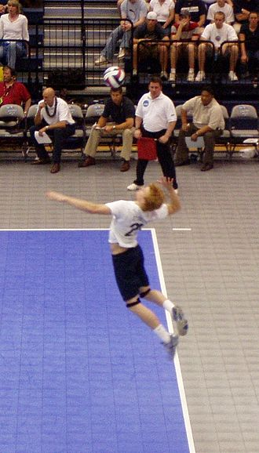
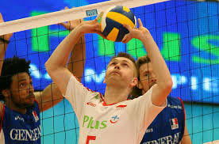
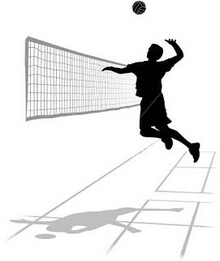
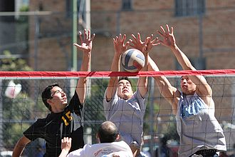

Servis
Servis je početni udarac kojime počinje svaki poen, izvodi se na početku seta i posle svake greške. Igrač mora udariti loptu tako da pređe mrežu i pogodi unutar terena protivnika. Postoje dve vrste servisa - gornji i donji, ali danas u vrhunskoj odbojci više niko ne servira donji servis. Najpopularniji servis je servis u skoku koji može biti veoma težak za prijem ako ima veliku brzinu i rotaciju.
Odbijanje podlakticama (prijem servisa, odbrana polja)
Primenjuje se kod primanja protivničkog servisa, odbrane polja i prema odbijenih lopti od bloka. Ruke se spajaju u tzv. „čekić“, podlaktice su paralelne i unutrašnji deo podlaktica je okrenut prema gore. Ovaj način odbijanja se koristi za prvi dodir s loptom kod prijema servisa i za efikasnu odbranu polja kod smečiranja protivničkih napadača. U današnje vreme kada je uveden libero kao igrač specijalizovan za ovu tehniku, libero preuzima glavni deo odbrane terena kako u prijemu servisa tako i u odbrani od protivničkog smeča.

Dizanje (odbijanje prstima)
Dizanje je vršno odbijanje lopte iznad glave koje se koristi da bi se promenio smer lopte od primljenog servisa i što bolje pozicioniralo loptu napadaču. Tehničar najčešće odigrava drugu loptu u akciji. Dizanje je glavni taktički deo odbojke jer tehničar mora biti toliko dobar da svojim napadačima omogući napad na mestima gde je blok protivnika najslabiji. Zato mora uz svoje igrače stalno pratiti i protivničke, pogotovo njihovo kretanje na mreži. U pravilu danas u postavi igra jedan dizač, no postoje još i ekipe koje igraju s dva dizača.
Smečiranje (smeč)
Ovo je najefikasniji i najatraktivniji oblik upućivanja lopte u polje protivnika, a time i postizanja poena. Lopta dignuta iznad nivoa mreže hvata se u skoku u najvišoj mogućoj tački i što većom brzinom i što strmije upućuje u protivničko polje. Takođe, prije udaranja smeča potrebno je uraditi odgovarajući zalet (puni zalet za smeč-sa 4. metra ili brzi, kratki tzv. penal sa 3. metra).
Blok
Blok je prva linija odbrane u odbojci i najefikasnija odbrana od smeča. Za blokiranje su zadužena tri igrača koja se nalaze na mreži. Oni mogu postaviti blok tako da prate protivničkog tehničara i njegovo dizanje, pa se ravnaju po njemu ili da pre same akcije protivnika odluče da li će pokušati blokirati brzi napad sa sredine mreže. Glavna karakteristika dobrog bloka je prelazak rukama na drugu stranu mreže u trenutku skoka, jer ako ruke blokera stoje ravno na bloku dobar smečer će to znati iskoristiti tako da će bloker na kraju izblokirati smeč, ali na svoju stranu, najčešće sam sebi pod noge. Bloker može izblokirati svaki napad, izuzevši prvi odnosno servis.
